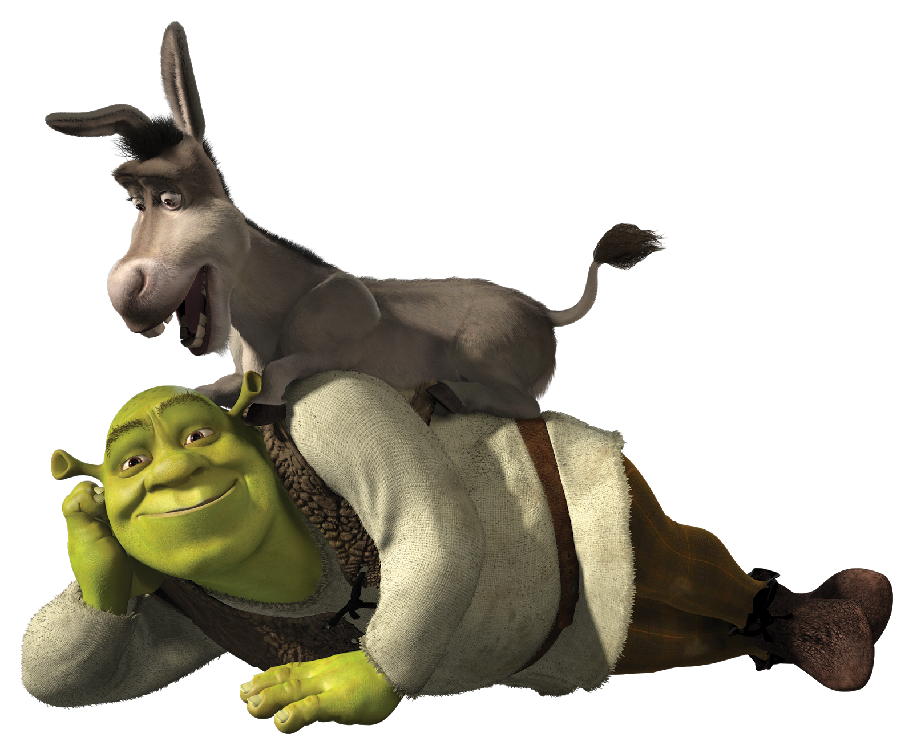

Metamorphous is a medium contrast design taking style cues from a wide variety of sources. It draws on and mixes together Romanesque, Gothic and the more familiar Renaissance letter shapes. Originally inspired by display fonts including the free font Morpheous designed by Kiwi Media as well as the work of Jonathan Barnbrook; Metamorphous is designed to be useful in a broad range of applications and sizes. Metamorphous also covers most languages that use Latin letters.
Aa
Bb
Cc
Dd
Ee
Ff
Gg
Hh
Ii
Jj
Kk
Ll
Mm
Nn
Oo
Pp
Qq
Rr
Ss
Tt
Uu
Vv
Ww
Xx
Yy
Zz
0 1
2 3
4 5
6 7
8 9
- ?
! $
% []
{ } ()
.
Fairy Tale
Fiona
Shrek
Donkey
Kingdom
One of the most influential and iconic movies in cinematic history is about a green ogre who undergoes the desire to be alone but in the end finds community, friendship, and love. Not only is the first movie incredibly popular and indulgent, but the movie is followed by three other sequels and a soon to be fourth. The whimsical film was released on May 18, 2001. From this day forward, Shrek has been a classic funny film that appeals to adults and children. This can only raise the question further; what makes Shrek so iconic?
Arguably, the two most accurate reasons behind why Shrek remains iconic is the wholesome advocacy of character development and the mix of adult and child humor. From seeing a feared and misunderstood ogre go from despised to loved and gifted is undeniably inspirational. A specific moment in Shrek would have to be the shift when he realized the woman he grew to adore also understood him on levels he didn’t think was possible. To see Shrek's response to feeling understood for the first time is inspiring and heart-warming. A moment to represent the mix of adult and child humor would be when they enter Farquaads “kingdom” and acknowledge how short he is (which children can understand and laugh at) and also add in how his large castle is overcompensating for something. Both of these points evaluate and acknowledge how Shrek became so iconic.
Overall, the film Shrek and its respected sequels are incredibly heart-warming and will be shown for generations centuries to come. The million dollar production can be found everywhere in life, from your television in your living room to a t-shirt in Five Below.
Grab your favorite snacks, a blanket, and a friend and get ready to watch Shrek 1, Shrek 2, Shrek 3 and Shrek 4.
Parents bring your kids here to meet all the fairytale characters from shrek! The kids can bring a book for the characters to autograph as well as a camera for photos.
Come join us Shrek fans for a fun weekend filled with all things Shrek. Shrek themed food, free gifts and giveaways, cosplay/cosplay contest, and more!
